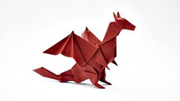

Origami Designs
About UsFollow Us

Anout the swan
Swans are birds of the family Anatidae within the genus Cygnus.
The swans' closest relatives include the geese and ducks.
Swans are grouped with the closely related geese in the subfamily Anserinae where they form the tribe Cygnini.
Sometimes, they are considered a distinct subfamily, Cygninae.

About the dragon
A dragon is a large, serpentine legendary creature that appears in the folklore of many cultures around the world.
Beliefs about dragons vary considerably through regions,
but dragons in western cultures since the High Middle Ages have often been depicted as winged,
horned, four-legged, and capable of breathing fire